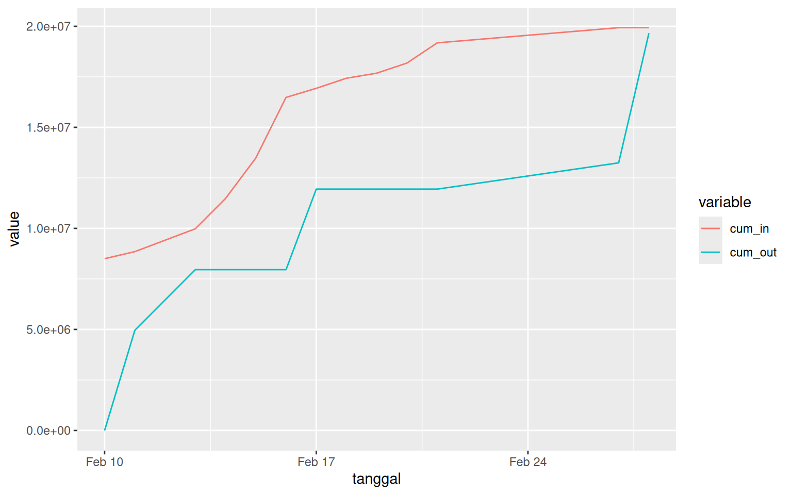

Saldo Kas Mushalla Last update: 27 May 09:09 WIB
Rp3.953.448
Download Detail Transaksi Harian
Saluran infaq terbaik Anda dengan QRIS berikut ini
Proporsi Penerimaan dan Penggunaan Kas Mushalla
Timeline Transaksi Keluar Masuk Kas Mushalla
Menjelang Ramadhan tahun 2025, Mushalla As Salaam melakukan beberapa kegiatan Ramadhan serta renovasi ringan seperti:
- Penambalan atap bocor,
- Pengecatan ulang interior,
- Penggantian sound system, dan
- Penggantian keramik.
Catatan: Sisa saldo dialihkan ke kas mushalla.
Total Transaksi per Kategori
Kategori Nilai Transaksi
Infaq Rp13,931,649
Kegiatan Ramadhan -Rp1,300,000
Pembayaran tukang -Rp13,412,951
Pembelian sound system -Rp4,943,700
Sisa saldo renovasi lalu Rp6,000,000
Sisa saldo Rp274,998
lalala
